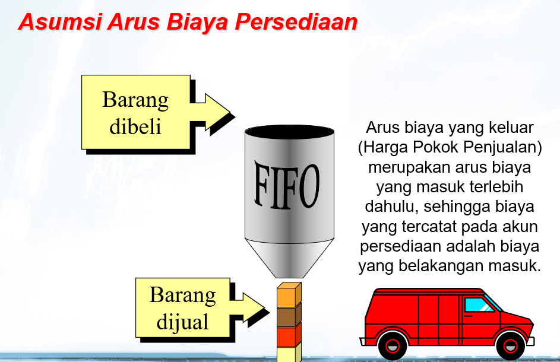

First In First Out (FIFO)
Saat metode FIFO (First In First Out) dari biaya persediaan digunakan, biaya dimasukkan dalam beban pokok penjualan dengan urutan yang sama saat biaya tersebut terjadi. Metode FIFO sering kali sama dengan arus fisik persediaan. Oleh karena itu, metode FIFO memberikan hasil yang hampir sama dengan hasil yang diperoleh dari metode identifikasi biaya spesifik. Sebagai contoh, toko bahan makanan mengatur rak produk susu atau produk lain yang tidak tahan lama berdasarkan tanggal kedaluwarsa. Produk dengan tanggal kedaluwarsa lebih awal diletakkan di urutan depan. Dengan demikian, produk terlama (dibeli paling awal) terjual lebih dulu.
